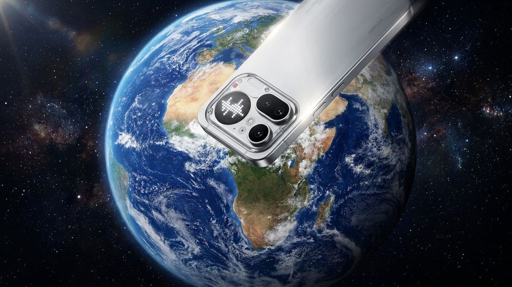

Nothing Phone : la marque rebelle peut-elle conquérir l’Afrique ?

Le marché gris désigne la vente de produits importés hors des circuits officiels de la marque : prix parfois attractifs, mais garantie et service après-vente souvent absents ou incertains.
Un smartphone au dos transparent, des lumières qui clignotent et un logiciel épuré : Nothing a bousculé le marché mondial depuis 2022. Mais le jeune constructeur britannique peut-il séduire un continent où des marques solides règnent déjà ?
Sommaire
Qui est Nothing ?
Fondée à Londres, Nothing a lancé son premier téléphone en 2022. En mai 2026, l’entreprise avait dépassé les 2 milliards de dollars de revenus cumulés et employait environ 900 personnes. Sa gamme 2026 comprend notamment les Phone (4a) et Phone (4a) Pro (sortis en mars), et la sous-marque CMF propose des appareils plus abordables comme le CMF Phone 1 ou le CMF Phone 2 Pro. Les téléphones tournent sous Nothing OS 4.1, basé sur Android 16.
Déjà présent… par des revendeurs
On trouve des Nothing Phone au Nigeria et au Kenya via des revendeurs en ligne et des boutiques. Exemples de prix relevés au Kenya :
| Modèle | Prix approximatif (Kenya) |
|---|---|
| Phone (4a) 8/128 Go | ≈ 47 500 shillings |
| Phone (4a) Pro 12/256 Go | ≈ 74 900 shillings |
| Phone (3a) Lite | ≈ 28 500 shillings |
| CMF Phone 1 | ≈ 27 000 shillings |
Au Nigeria, la couverture est jugée inconsistante : plusieurs modèles passent par l’importation, avec des prix très variables selon les vendeurs.
Les atouts pour séduire le public africain
- Un design immédiatement reconnaissable, très prisé des créateurs de contenu et des jeunes urbains.
- Un logiciel léger, sans surcharge d’applications.
- Une gamme CMF qui vise les budgets serrés.
- Une communauté en ligne très active, ce qui compte là où le bouche-à-oreille et les réseaux sociaux font la réputation d’une marque.
Les obstacles
- La distribution officielle : sans réseau structuré, impossible de garantir le service après-vente, les réparations et les pièces détachées.
- Le prix : face à Tecno, Infinix, Itel, Samsung ou Redmi, très agressifs sur le milieu de gamme, les Nothing coûtent souvent plus cher pour des performances comparables.
- La compatibilité réseau : vérifier les bandes 4G/5G disponibles dans votre pays est indispensable.
Que faire si vous voulez en acheter un ?
1Choisissez un vendeur fiable
Privilégiez un vendeur qui offre une vraie garantie.
2Vérifiez le modèle
Demandez la version exacte du modèle et contrôlez la compatibilité avec les réseaux de votre pays.
3Comparez
Comparez avec des alternatives locales, et évitez les offres trop belles, surtout sur le marché gris.
Notre verdict
Nothing a de vrais atouts pour devenir une marque culte auprès d’un public jeune et connecté. Pour viser la masse, il lui faudra des prix plus agressifs, des distributeurs officiels et un service après-vente solide. À court terme, c’est une marque de niche à fort potentiel ; à long terme, tout dépendra de sa stratégie africaine.
Les prix varient selon le vendeur et le pays.
En résumé
Nothing séduit par son design et sa communauté, mais manque d’un réseau officiel et de prix agressifs face à Tecno, Infinix ou Samsung. Si vous en achetez un, privilégiez une vraie garantie et vérifiez la compatibilité réseau.
Quiz : testez vos connaissances
FAQ
Les Nothing Phone sont-ils disponibles en Afrique ?
Oui, via des revendeurs, notamment au Nigeria et au Kenya, mais sans réseau officiel structuré.
Quel est l’atout principal de Nothing ?
Un design immédiatement reconnaissable (dos transparent) et un logiciel léger, très prisés des jeunes urbains.
Nothing est-il plus cher que Tecno ou Infinix ?
Souvent oui, pour des performances comparables, selon les prix relevés.
Que vérifier avant d’acheter ?
La garantie du vendeur, la version exacte du modèle et la compatibilité avec les réseaux 4G/5G de votre pays.
À lire aussi
- iPhone 18 Pro Max contre Xiaomi 18 Pro Max : le duel qui secoue le marché
- Ne dépensez pas plus de 200 € : les 5 meilleurs smartphones pas chers de 2026
- La Chine veut dominer l’IA mondiale : où en est-elle vraiment ?
Vous avez aimé cet article ?
Partagez-le avec quelqu'un qui en a besoin, et découvrez le reste du blog pour aller plus loin.